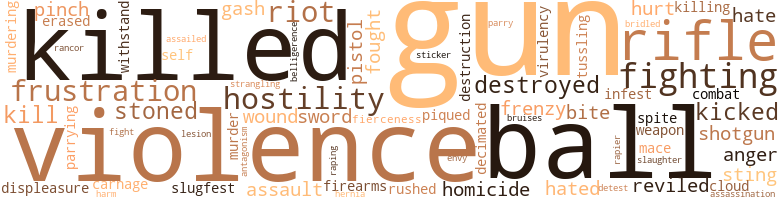
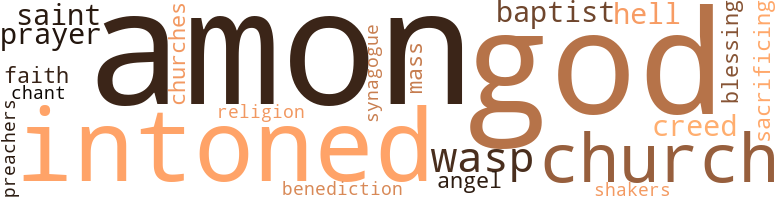

Superspade No. 1: Death of a Blue-Eyed Soul Brother, by Greene, Joe (1970)
40 music-related terms matched in this text.
Most frequent terms in this topic: line (5); whistle (4); phrase (4); intoned (3); suite (2)
accordion.n.01
Definition: a portable box-shaped free-reed instrument; the reeds are made to vibrate by air from the bellows controlled by the player
| word | sentence |
|---|---|
| accordion | A pair of ribs on the left side folded faster than a cheap accordion at a Mafia picnic . |
chapter.n.01
Definition: a subdivision of a written work; usually numbered and titled
| word | sentence |
|---|---|
| chapter | " I understand that the Sabres have a chapter here . |
| chapters | By seven thirty that morning we had established that there were four chapters at work in California . |
chorus.n.01
Definition: any utterance produced simultaneously by a group
| word | sentence |
|---|---|
| chorus | Even as the chorus of lusty boos was ringing in my ears at the announcement of my name , that big Ram front four was snarling at me like they were about to see just how tough I was . |
croon.v.01
Definition: sing softly
| word | sentence |
|---|---|
| crooned | I crooned . |
dance.v.03
Definition: skip, leap, or move up and down or sideways
| word | sentence |
|---|---|
| danced | That luscious Appleby figure danced into my mind and made its point . |
epistle.n.02
Definition: a book of the New Testament written in the form of a letter from an Apostle
| word | sentence |
|---|---|
| epistles | But why would a man jeopardize his whole political future by tearing off post-pussy epistles that might haunt him into oblivion ? |
music.n.01
Definition: an artistic form of auditory communication incorporating instrumental or vocal tones in a structured and continuous manner
| word | sentence |
|---|---|
| Music | Music could be heard blaring from one wing through opened windows . |
musical_instrument.n.01
Definition: any of various devices or contrivances that can be used to produce musical tones or sounds
| word | sentence |
|---|---|
| instrument | That is , to be an instrument for the benefit of the American people without regard to race , color or previous condition of servitude . |
phrase.n.02
Definition: a short musical passage
| word | sentence |
|---|---|
| phrase | She used the phrase that always meant she wanted me to turn her over with her buttocks teasing my belly and enter the tender creamy softness of her so that she could embrace my tool with muscles that strained and tightened their message of need . |
| phrase | There 's a phrase that we use like no one else . |
| phrase | Somberly he cracked out a phrase . |
| phrase | Basically we have a pattern going for us that gave rise to that phrase so often employed by some of your greatest comedians - ' White man speak with forked tongue . ' |
piano.n.01
Definition: a keyboard instrument that is played by depressing keys that cause hammers to strike tuned strings and produce sounds
| word | sentence |
|---|---|
| piano | The muted brass was digging in with the right accents to the piano phrasing . |
pipe.n.04
Definition: a tubular wind instrument
| word | sentence |
|---|---|
| pipe | He pulled on his pipe and took me out with him while he cut the lawn . |
| pipe | She turned and motioned to a brunette sitting wrapped in a serape and drawing dreamily on a clay pipe . |
rap.n.05
Definition: genre of African-American music of the 1980s and 1990s in which rhyming lyrics are chanted to a musical accompaniment; several forms of rap have emerged
| word | sentence |
|---|---|
| rap | Want to rap ? " |
rhythm.n.01
Definition: the basic rhythmic unit in a piece of music
| word | sentence |
|---|---|
| beat | At seven past midnight I got out of my beat up Chevy and anxiously walked the few feet to the liquor store window at Adams and San Pedro . |
rumba.n.01
Definition: syncopated music in duple time for dancing the rumba
| word | sentence |
|---|---|
| rhumba | Let no one tell you that the oriental is unemotional when she wants to get her sex rhumba into the ready groove . |
score.n.02
Definition: a written form of a musical composition; parts for different instruments appear on separate staves on large pages
| word | sentence |
|---|---|
| score | The score was tied fourteen apiece midway through the third quarter when Jess Haynes , our right tackle on offense , takes a knee in the chin . |
sing.v.02
Definition: produce tones with the voice
| word | sentence |
|---|---|
| sings | The atmosphere sings . |
singing.n.01
Definition: the act of singing vocal music
| word | sentence |
|---|---|
| singing | Man , my black ass was singing . |
suite.n.01
Definition: a musical composition of several movements only loosely connected
| word | sentence |
|---|---|
| suite | " This is n't the bridal suite , " she said in a voice dripping honey , " but it 's right next to his and it could be the most important room in the place . " |
| suite | Mary Ann McHugh had her own suite at the Ambassador . |
tone.v.01
Definition: utter monotonously and repetitively and rhythmically
| word | sentence |
|---|---|
| intoned | " It 's not like the old days , " he intoned in his grizzled throaty delivery compounded by a cold . |
| intoned | " Did she convince you ? " she intoned . |
| chant | " Somebody starts to chant and then the professor takes over . |
| intoned | " Richard , " she intoned in husky eagerness , " he 's up in his suite with Giddings and Lane . |
tune.n.01
Definition: a succession of notes forming a distinctive sequence
| word | sentence |
|---|---|
| line | When did she change to this line , this run ! |
| line | " Richard , " Mary Ann said , offering me a slender black Sherman , which I refused , " she is probably the beginning of a long line of under-loved , over-thyroidal young things that are going to throw themselves at you . |
| line | I did know how to keep that fine , wild chick in line . |
| tune | Another Tom Jones tune was on the radio . |
| line | I came round the players and purposely cut off his line of view . |
| tune | Sid casually read him a list of complaints against his establishment and Todas changed his tune to one of compliance . |
| line | This had helped line the jaws , make the strong lingers a bit unsteady and added an extra pain to each deep intake of breath . |
whistle.v.01
Definition: make whistling sounds
| word | sentence |
|---|---|
| whistled | I whistled and the chauffeur must have heard me through the glass partition . |
| whistle | He pursed his lips , let go a small sad whistle , thought better of it . |
| whistle | Would she panic and blow the whistle ? |
| whistle | Then , just before I was ready to leap out the window he gave a long , low whistle . |
| whistle | I let go a long , low whistle . |
147 violence-related terms matched in this text.
Most frequent terms in this topic: gun (10); violence (9); killed (8); balls (5); rifle (5)
anger.n.01
Definition: a strong emotion; a feeling that is oriented toward some real or supposed grievance
| word | sentence |
|---|---|
| anger | Tall as she was , I towered over her in my anger . |
| anger | " I know it seems pretty bad , but there 's frustration and anger loose that 's like the mob . |
attack.v.01
Definition: launch an attack or assault on; begin hostilities or start warfare with
| word | sentence |
|---|---|
| assailed | The sour odor of the professor assailed my nostrils . |
belligerence.n.01
Definition: hostile or warlike attitude or nature
| word | sentence |
|---|---|
| belligerence | Suddenly , I was feeling uptight and streaks of belligerence started sneaking through my head . |
bridle.v.01
Definition: anger or take offense
| word | sentence |
|---|---|
| bridled | - " I am not , " she bridled and suddenly sought my mouth with hers . |
bruise.n.01
Definition: an injury that doesn't break the skin but results in some discoloration
| word | sentence |
|---|---|
| bruises | Usually he lets the top four or live have at each other and then he ties in with the one that comes out with the fewest bruises . " |
character_assassination.n.01
Definition: an attack intended to ruin someone's reputation
| word | sentence |
|---|---|
| assassination | " I 'm speaking of that hideous assassination . " |
cloud.n.05
Definition: suspicion affecting your reputation
| word | sentence |
|---|---|
| cloud | She was coming down a little off her cloud nine perch . |
craze.n.02
Definition: state of violent mental agitation
| word | sentence |
|---|---|
| frenzy | They were sending out the mysterious scent that drove the members of the opposite sex into a frenzy of sexual need . |
| frenzy | She saw me glancing at her as the blonde beneath clawed frantically , sucking at my own male nipples and moaning in her frenzy . |
cut.n.05
Definition: a wound made by cutting
| word | sentence |
|---|---|
| gash | I leaped and this time I nailed him as , surprisingly strong , he arced the gun and it tore through my natural into my scalp , tearing a six-inch gash . |
| gash | I took in the ransacked desk and huddled over in a comer , a terrible gash across his forehead , sat my old friend , Makim , arms folded as he rocked back and forth sobbing to himself . |
dagger.n.01
Definition: a short knife with a pointed blade used for piercing or stabbing
| word | sentence |
|---|---|
| sticker | I bought a FREE HUEY bumper sticker not just as a put-off but because I honestly believed that the cat should be free . |
defy.v.01
Definition: resist or confront with resistance
| word | sentence |
|---|---|
| withstand | He was a rugged man , but the constant exertion of shaking thousands of hands and nonstop talking took more than human stamina could withstand at such a grueling pace . |
destroy.v.04
Definition: put (an animal) to death
| word | sentence |
|---|---|
| destroyed | I could n't help admiring the perception of this cat who was bright enough to know that language barriers has to be destroyed for full understanding . |
| destroyed | Incredibly , a hundred and fifty square blocks of property had been destroyed , and now , some three years later , there was a resurgence of business buildings . |
| destroyed | " It was we who destroyed Senator Wayne Griffin . |
displeasure.n.01
Definition: the feeling of being displeased or annoyed or dissatisfied with someone or something
| word | sentence |
|---|---|
| displeasure | He might rant and rave and accuse , but at least his displeasure could be pinpointed and met by direct action . |
eliminate.v.03
Definition: kill in large numbers
| word | sentence |
|---|---|
| decimated | Oldsters , whose interest lay in the direction of decimated pensions and concern for the shrinkage of the nest egg dollar , found themselves in accord with bright-minded youth , who were fed up with establishment lies and meaningless treadmills and yearned for a leader of solid capability with whom they could identify . |
envy.n.01
Definition: a feeling of grudging admiration and desire to have something that is possessed by another
| word | sentence |
|---|---|
| envy | " I 'll be back , " he barked , and tossing me a genuine look of envy , he dashed from the room . |
erase.v.01
Definition: remove from memory or existence
| word | sentence |
|---|---|
| erased | So many wrongs have to be erased . |
ferocity.n.01
Definition: the property of being wild or turbulent
| word | sentence |
|---|---|
| fierceness | Something about my hundred-ninety-pound bulk crushing down on her one hundred and three pounds brought out a fierceness that ended with her escaping in orgasm after orgasm and begging for more until she passed out cold . |
fight.n.02
Definition: the act of fighting; any contest or struggle
| word | sentence |
|---|---|
| combat | On the siding where we were to disembark and cross the highway stood a cold phalanx of local sheriffs , state highway patrol and DeMerjin security police , complete with hard hats , combat equipment , mace bombs and tear gas . |
fight.n.05
Definition: a boxing or wrestling match
| word | sentence |
|---|---|
| fight | " Is n't this the same L. D. Lane who has just bought the Omaha Nuggets in the Inter City League and promised the NFL a real all out fight ? " |
fight.v.02
Definition: fight against or resist strongly
| word | sentence |
|---|---|
| fighting | " He has to be shown that we 're fighting basically for the same things , " I went on , " but we have to be free to do it our way . " |
| fighting | She halted , fighting herself . |
| fighting | Others were in the streets fighting and dying for their blackness , some simply because that 's all they have to offer the struggle . |
| fought | I fought it away but there it was staring at me . |
| fighting | I was carrying the message with my black studies program and I was successfully fighting to control my other bag . |
| fought | She lay back and fought back that prophetic sob . |
firearm.n.01
Definition: a portable gun
| word | sentence |
|---|---|
| firearms | He told me that usually a bodyguard carried a weapon but since Griffin was not a believer in the effectiveness of firearms , I would be asked to serve unarmed . |
fistfight.n.01
Definition: a fight with bare fists
| word | sentence |
|---|---|
| slugfest | By doing this he was asking for a head-to-head slugfest with both the conservative and the reactionary members of his own party - the status quo cats ! |
frustration.n.03
Definition: a feeling of annoyance at being hindered or criticized
| word | sentence |
|---|---|
| frustration | Her eyes blazed in a face suddenly gone evil with frustration and rejection . |
| frustration | Another speaks of the frustration of failure as being the wet nurse of violence . |
| frustration | Only this was my frustration . |
| frustration | " I know it seems pretty bad , but there 's frustration and anger loose that 's like the mob . |
gun.n.01
Definition: a weapon that discharges a missile at high velocity (especially from a metal tube or barrel)
| word | sentence |
|---|---|
| guns | Slowly she rose to her haunches , rocking back on her heels , her breasts pointing at me two delightful guns . |
| gun | " Learn to use a gun and brass knuckles . |
| gun | " Do you think that I should carry a gun ? " |
| gun | I lay there on the bed in just my shorts , praying for the sedative to work , but the tiny blue capsule only achieved a state of limbo where I felt numb in every quarter except that portion that told me that under no circumstances could I admit that I 'd seen a black man behind that gun . |
| gun | You did n't put a gun on Griffin and make him take that damn walk . |
| gun | " I want to know if one of your cats was stupid enough to gun down Griffin ! " |
| gun | When I got out , the one who held the gun in my ribs both ways snatched the blindfold off . |
| gun | I saw the professor , a wild glint in his eye , a gun in his hand as he stared down at the floor . |
| gun | I leaped and this time I nailed him as , surprisingly strong , he arced the gun and it tore through my natural into my scalp , tearing a six-inch gash . |
| gun | I grabbed his gun hand and the wrist , jamming his trigger finger against his thumb making him unable to force the trigger . |
| gun | I was bending his head slowly backward until I had the grip I wanted then I jerked it forward and at the same time I was forcing the hand with the gun towards a mouth gulping and burbling obscenities . |
| guns | Here comes Gary Cooper Spade with his silent guns ready to blow some sense into your dumb heads the next time you take a package of Walnettos away from Bitsy Brown . |
hate.v.01
Definition: dislike intensely; feel antipathy or aversion towards
| word | sentence |
|---|---|
| hated | This was action I did n't mind , but I knew Janice was a tricky bitch and she hated herself for letting me turn her on like I did , but she was n't about to give it up . |
| hated | We were playing the hated Rams before ninety-thousand-plus screaming fanatics . |
| detest | When I say Mister Spade , you will know that you have made my thoroughly detest list and you might wake up any day with poison ink in your Wheaties . " |
| hate | Personally , I would hate to hear of your being involved in an altercation that might distress those remarkable features . " |
| hate | I can not hate even now . |
hernia.n.01
Definition: rupture in smooth muscle tissue through which a bodily structure protrudes
| word | sentence |
|---|---|
| hernia | The backup man was out with a hernia and because I knew the position the coach called on me . |
homicide.n.01
Definition: the killing of a human being by another human being
| word | sentence |
|---|---|
| homicide | " I 'm a police lieutenant , homicide L.A . |
| homicide | Lieutenant Sid Street , homicide . " |
hostility.n.01
Definition: a hostile (very unfriendly) disposition
| word | sentence |
|---|---|
| hostility | Some of them gazed at me suspiciously , a few in open hostility , and then a beefy detective broke into an elephantine grin . |
| hostility | The eyes of the class were on him now and Mary Appleby glared up in his face with a look of amused hostility . |
| hostility | It was calculated hostility . |
| hostility | He had a mashed nose , a fighter 's face , and eyes that reminded me of a gorilla as he glared in open hostility . |
hostility.n.02
Definition: a state of deep-seated ill-will
| word | sentence |
|---|---|
| antagonism | No outward antagonism . |
hurt.v.04
Definition: cause damage or affect negatively
| word | sentence |
|---|---|
| hurt | " But why must they hurt those that mean them no harm ? " |
infest.v.01
Definition: invade in great numbers
| word | sentence |
|---|---|
| infest | The fuzz and the De Merjin people stiffened and glared at us as though we were lepers come to infest the community . |
injury.n.01
Definition: any physical damage to the body caused by violence or accident or fracture etc.
| word | sentence |
|---|---|
| harm | " But why must they hurt those that mean them no harm ? " |
kick_back.v.02
Definition: spring back, as from a forceful thrust
| word | sentence |
|---|---|
| kicked | She kicked off her shoes and stepped out of the crumpled silken ring . |
| kicked | " Your mam did n't raise no fools , boy , but sometimes I think them football people kicked you in the head instead of the ass ! |
| kicked | I kicked off my shoes and she pulled off my socks . |
kill.v.10
Definition: cause the death of, without intention
| word | sentence |
|---|---|
| killed | How many kids have to be killed at a bad corner before a stop light goes up ? |
| killed | After a dozen or so strokes killed the pain one was expected to break wind unashamedly , letting his benefactor know that he had been delivered of the miseries . |
| killed | " It was a niggar that killed him , was n't it ? |
| kill | " Your father feels that you think you saw a Negro kill the senator and what you want to find the murderer yourself . |
| killed | " Perhaps , " he said , " whoever killed Senator Griflin would like to have it blamed on your people . " |
| killed | I was going to lie if it killed me . |
| killed | " Dick , you think a negro killed Griffin . |
| kill | I 'm going to tell you that I saw a black bastard kill your man !! " |
| kill | They could n't kill flies ! |
| killed | Both killed in that big roller coaster accident on the Fourth of July at the old Pike in Long Beach . |
| killed | Sweating over those pots in that Beverly Hills kitchen , then taking the long streetcar ride down to East Fifty-Second Street in that drafty U car , had brought on the lung condition that eventually killed her . |
killing.n.02
Definition: the act of terminating a life
| word | sentence |
|---|---|
| killing | But one of our leading psychiatrists said that we 're heading into an age of magnicide , the killing of somebody big . |
mace.n.01
Definition: (trademark) a liquid that temporarily disables a person; prepared as an aerosol and sprayed in the face, it irritates the eyes and causes dizziness and immobilization
| word | sentence |
|---|---|
| mace | On the siding where we were to disembark and cross the highway stood a cold phalanx of local sheriffs , state highway patrol and DeMerjin security police , complete with hard hats , combat equipment , mace bombs and tear gas . |
malice.n.01
Definition: feeling a need to see others suffer
| word | sentence |
|---|---|
| spite | Hers was hope in spite of itself . |
murder.n.01
Definition: unlawful premeditated killing of a human being by a human being
| word | sentence |
|---|---|
| murder | It was bound to happen since King 's murder . |
murder.v.01
Definition: kill intentionally and with premeditation
| word | sentence |
|---|---|
| murdering | The murdering sonofabitch is black !! |
musket_ball.n.01
Definition: a solid projectile that is shot by a musket
| word | sentence |
|---|---|
| balls | And they can shoot the balls off a rabbit without him ever knowing it . " |
| ball | I had to get the ball back . |
| balls | One after each one of these swinging balls . " |
| balls | Mickie Koto , the shortest of them all reached a hasty finger beneath my balls and goosed me . |
| ball | When I walked in to his establishment he was seated in a wheelchair near the back , his snow-white hair a thin mantel atop his head as he peered through thick spectacles at two teenagers shooting a fast game of eight ball . |
| balls | We 're over eight thousand right in this county , baby , and if we turn up a sonofabitch , you 're gon na get his balls for breakfast ! " |
| balls | The other girls muttered , including the redhead who had gotten so far as to caressing but one of my balls , but reluctantly she complied . |
| ball | If she really dug me that much , why could n't I logically really turn it on and ball the whole story out of her ! |
| ball | My side had just run ninety-five yards without the ball . |
pain.v.02
Definition: cause emotional anguish or make miserable
| word | sentence |
|---|---|
| hurt | " It sure do n't hurt you , " I said admiringly . |
parry.v.01
Definition: impede the movement of (an opponent or a ball)
| word | sentence |
|---|---|
| parrying | I humbly ( hanked my luck that Doctor Danny Herman was in the other room parrying any questions and insisting that I be given an hour or two to sufficiently recover my wits before being submitted to the merciless grilling that had to be coming . |
| parry | Thrust and parry and sooner or later - the fatal opening . |
pinch.n.02
Definition: an injury resulting from getting some body part squeezed
| word | sentence |
|---|---|
| pinch | He lay the two halves down on the top of his desk , took a pinch of the contents between thumb and forefinger , and tasted . |
| pinch | He gave a pinch to Lily Chan . |
pique.v.01
Definition: cause to feel resentment or indignation
| word | sentence |
|---|---|
| piqued | His curiosity was piqued . |
pistol.n.01
Definition: a firearm that is held and fired with one hand
| word | sentence |
|---|---|
| pistol | Crazy baby , I thought , but I did take easier breaths to keep the nose of the pistol from digging so deep . |
| pistol | I lunged to one side as the pistol cracked . |
rape.n.03
Definition: the crime of forcing a woman to submit to sexual intercourse against her will
| word | sentence |
|---|---|
| assault | Our headquarters for the assault on California was a spacious bungalow complex at the Ambassador Hotel on Wilshire Boulevard in Los Angeles . |
| assault | The Mexicans suddenly were confused by this unexpected assault . |
rape.v.01
Definition: force (someone) to have sex against their will
| word | sentence |
|---|---|
| raping | How do you keep my sex from forcibly raping you about every twenty seconds ? " |
rapier.n.01
Definition: a straight sword with a narrow blade and two edges
| word | sentence |
|---|---|
| rapier | He came round the desk with its top carved from a redwood burl and placed a hand on my shoulder as he stood there , rapier thin and fulfilling the popular portrait of the serious scholar . |
resentment.n.01
Definition: a feeling of deep and bitter anger and ill-will
| word | sentence |
|---|---|
| rancor | It was a question put fairly and without the rancor he 'd been showing a sentence or two before . |
rifle.n.01
Definition: a shoulder firearm with a long barrel and a rifled bore
| word | sentence |
|---|---|
| rifle | I saw the gleaming rifle barrel and the scope and the face peering at us calmly from above it . |
| rifle | The kids , a group of hippies , had seen the senator slump into my arms and two of them had heard the faint crack of the rifle . |
| rifle | I told him that I had seen a black man with a rifle and that I had restrained from spilling to the fuzz because the implications were too disastrous to contemplate . |
| rifle | " I 'll have to say that you recall having seen a male Negro peering over the rifle . " |
| rifle | " He colored himself black and took his rifle and when he saw which way the pig , Griffin , and his bodyguard were going , he hid in the bushes . |
riot.n.01
Definition: a public act of violence by an unruly mob
| word | sentence |
|---|---|
| riots | I drove my XKE through the streets of modest homes up Central Avenue where there were still a few sordid scars left from the August 1965 riots and fire . |
| riot | It was the big riot and I felt , like Mary Ann McHugh , that unless the right man came on the scene in a " No , Dad , " I came on a little bitter , " I 'm not a street niggar , I 'm Super Spade , remember ? |
| riot | I commend you on your remarkable restraint and , being hurry , the original Watts riot would flare up a hundredfold . |
| riot | " I ca n't answer that , but did n't they leave you alone during the big riot ? " |
rush.v.02
Definition: attack suddenly
| word | sentence |
|---|---|
| rushed | He spoke and his voice rushed at me in a low vindictive hiss . |
scuffle.v.02
Definition: fight or struggle in a confused way at close quarters
| word | sentence |
|---|---|
| tussling | Other fingers were there tussling for a handhold . |
shotgun.n.01
Definition: firearm that is a double-barreled smoothbore shoulder weapon for firing shot at short ranges
| word | sentence |
|---|---|
| shotgun | I thought of my town , my friend Sid Street , my daddy sitting in a doorway with a loaded shotgun in his lap . |
| shotgun | " Richard , " he said with a sense of inner triumph , " they never touched me because your father came down here and sat in my doorway with a shotgun across his lap . " |
slaughter.n.03
Definition: the savage and excessive killing of many people
| word | sentence |
|---|---|
| carnage | I had to admit that the climate of violence was upon us with the prospects of carnage waiting eagerly in the wings . |
| slaughter | I would n't say that we were underpaid for facing this slaughter week after week , but many a guy with whom I had discussed the problem had the same bitch at the system . |
sting.n.03
Definition: a painful wound caused by the thrust of an insect's stinger into skin
| word | sentence |
|---|---|
| bite | Vietnam and the bite of the shrapnel just above the knee of my right leg as I carried a wounded buddy that hell of a thirty yards through a mined rice paddy . |
| sting | I felt the sting of my eager breath a dull needle in my ribs forgotten as her mouth yielded its wet softness to mine . |
| sting | I needed the sting and the bite of it . |
| bite | I needed the sting and the bite of it . |
stone.v.01
Definition: kill by throwing stones at
| word | sentence |
|---|---|
| stoned | Her false eyelashes , from beneath which her eyes glinted their stoned welcome , were at least three quarters of an inch long . |
| stoned | The professor was stoned , but not like those cats on pot . |
| stoned | He was stoned out of it . |
strangle.v.01
Definition: kill by squeezing the throat of so as to cut off the air
| word | sentence |
|---|---|
| strangling | " The bloody Chinese , " I said , almost strangling on the words , then I fainted dead away . |
suicide.n.01
Definition: the act of killing yourself
| word | sentence |
|---|---|
| self-destruction | Psychologists have failed to give us conclusive motivations unless these actions come under the umbrella of self-destruction . |
sword.n.01
Definition: a cutting or thrusting weapon that has a long metal blade and a hilt with a hand guard
| word | sentence |
|---|---|
| swords | As our glances crossed swords , there was no question as to the diversity of viewpoints wherein we stood . |
| sword | She grabbed the bedstead with both hands and started over it , her red tongue a flaming sword of desire . |
vilify.v.01
Definition: spread negative information about
| word | sentence |
|---|---|
| reviled | This man who 'd starved , fasted , been reviled , arrested and maligned , all for their benefit , stood quietly and watched as young Stokes and his crowd , aided by the sullenly belligerent fuzz , edged a path through the crowd and advanced on the speaker 's stand . |
| reviled | He reviled the " honky " with a vehemence second to none , but he also stated that the black man must be allowed to function under the democratic process and that failure to do so would bring on the chaos the prognosticators of doom so blithely foretold . |
violence.n.01
Definition: an act of aggression (as one against a person who resists)
| word | sentence |
|---|---|
| violence | I had to admit that the climate of violence was upon us with the prospects of carnage waiting eagerly in the wings . |
| violence | Another speaks of the frustration of failure as being the wet nurse of violence . |
| violence | I could see him on that morning in my black studies class when we 'd had the heated discussion concerning conciliation versus violence . |
| violence | He was n't afraid of physical violence , but he knew that the nature of the television coverage would be to play on any incident to the exclusion of the constructive areas . |
| violence | They were not only rid of the one man who could have beaten them solidly at the polls , these bastards , but they would feel justified in launching their own waves of violence . |
| violence | " Mister Spade , " he said in a tone passing sentence , " I agree that the black man contributed in some measure in the past , but do n't you think that conciliation is better than the current wave of violence ? " |
| violence | " Now , as for violence , he has never failed to justify its use when applied in his behalf . |
| violence | I can say that I am not in favor of violence per se , but whenever the logs of indolence , rapacious greed and blind injustice continue to dam humanity 's stream somewhere , a fuse must be applied and lit . |
| violence | " I should think , " he continued , " that one who agrees to play goon , for whatever reason , increases the possibility of violence to his person . |
virulence.n.02
Definition: extreme hostility
| word | sentence |
|---|---|
| virulency | The looks that passed between the two were of a virulency understood only by chicks , but Mary Ann did n't flinch . |
weapon.n.01
Definition: any instrument or instrumentality used in fighting or hunting
| word | sentence |
|---|---|
| weapon | He told me that usually a bodyguard carried a weapon but since Griffin was not a believer in the effectiveness of firearms , I would be asked to serve unarmed . |
wound.n.01
Definition: an injury to living tissue (especially an injury involving a cut or break in the skin)
| word | sentence |
|---|---|
| wound | My head was spinning and my guts were turning in on themselves , I hardly realized that the blood from the fatal wound had gushed all over me , leaving me a hideous mess . |
| lesion | His skin was dry and flaky , and below the distended pupils he constantly licked at a lesion on the left side of his mouth . |
| wounds | The wounds on both my arm and leg were bleeding profusely . |
39 religion-related terms matched in this text.
Most frequent terms in this topic: Amon (5); church (3); intoned (3); God (3); creed (2)
amen.n.01
Definition: a primeval Egyptian personification of air and breath; worshipped especially at Thebes
| word | sentence |
|---|---|
| Amon | Amon Giddings , the old political sharpshooter , took me by the arm . |
| Amon | Amon Giddings , Louis Dunaway Lane , Ted Myers and I formed a human cordon surrounding him thoroughly on three sides as we stepped from the train to the overwhelming din of the happy crowd . |
| Amon | Subsequently I was returned to the hotel in a squad car , and with Amon Giddings and Louis Dunaway Lane in charge of the show , I was mercifully given a sedative and placed in my room with a security guard at the door . |
| Amon | Amon Giddings from San Francisco . |
| Amon | She had the legendary Amon Giddings in tow . |
baptist.n.01
Definition: follower of Baptistic doctrines
| word | sentence |
|---|---|
| Baptist | " Yeah , " I said wryly , " John the Baptist had his problems too . |
| Baptist | Sometimes he would stand for hours in the Baptist Hall , half a block away from his business , and stare at the inviting pots of ham and cabbage and collard. , Then he would pull out his ticket , shrug and smile at his wonderful little wife and say , " Minnie , that ham comes from the side closest to the synagogue , " and he would proceed to put that jazz away , baby . |
blessing.n.05
Definition: the act of praying for divine protection
| word | sentence |
|---|---|
| blessing | Was this new power , I asked myself , a blessing or a curse in disguise ? |
| benediction | He gave it a finality , a tone of benediction as if by this he could dismiss the whole problem , make it nonexistent . |
church.n.02
Definition: a place for public (especially Christian) worship
| word | sentence |
|---|---|
| church | And ranged beside these grim-faced minions stood a group of " anglos , " all sullen-faced , all casting anxious glances at the huge outpouring of migrant workers gathered before the church , and at the fringe of the crowd busily putting the finishing touches to the platform from which the senator would address the crowd . |
| church | Then , as one , all eyes turned toward the entrance of the small clapboard church . |
| church | An aisle was cleared directly to where we stood as Roberto Valdez , his wife , Charita , and the priest emerged from the church . |
church.n.04
Definition: the body of people who attend or belong to a particular local church
| word | sentence |
|---|---|
| churches | We started at a leisurely pace up Wilshire , L.A. 's street of magnificent churches . |
creed.n.01
Definition: any system of principles or beliefs
| word | sentence |
|---|---|
| creed | Could I harness this force , for somehow in the midst of this painful searching for self I realized that I must have a creed , a goal , an identity . |
| creed | " To your group it 's something like a creed , a religion ? " |
god.n.03
Definition: a man of such superior qualities that he seems like a deity to other people
| word | sentence |
|---|---|
| God | I trust to God , for all our sakes , that you 'll be able to handle it . " |
| God | We shall , with the help of God and the enlightened will of the voting public , rid ourselves of this blight on the American conscience for now and forever . |
| God | God bless you , Senator ! " |
| Gods | Sarah and I know a few fags that are built like Gods but a total waste . " |
hell.n.01
Definition: any place of pain and turmoil
| word | sentence |
|---|---|
| hell | My full beard , fitted in the afternoon , was itching like hell and I was forgetting that my name was Dick Jones down from New Mexico to be near my sick sister in Pacoima . |
| hell | Perpetuation of the trust , keep those dividends on an even keel , and a large to hell with those that can not protect themselves ! " |
mass.n.09
Definition: a sequence of prayers constituting the Christian Eucharistic rite
| word | sentence |
|---|---|
| mass | On Sunday morning I 'd risen early and gone down in the old Central Avenue area which the mass media now lumped into one vast sprawl of the black community - Watts . |
prayer.n.01
Definition: the act of communicating with a deity (especially as a petition or in adoration or contrition or thanksgiving)
| word | sentence |
|---|---|
| prayer | " Because the whole world knows she wants him and , honey , she does n't have a prayer . " |
| prayer | As I stood at that sombre graveside and uttered a silent prayer for the salvation of this great country of ours and for the destruction of those insidious elements that fomented that great crime against humanity , I decided that his dreams , his ideals and his goals must be perpetuated at all costs . " |
preacher.n.01
Definition: someone whose occupation is preaching the gospel
| word | sentence |
|---|---|
| preachers | There was also a plentiful sprinkling of fruits , lay preachers , penny ante con artists and just plain bums pleading for handouts . |
religion.n.01
Definition: a strong belief in a supernatural power or powers that control human destiny
| word | sentence |
|---|---|
| faith | It was a touching lesson in human faith . |
| religion | " To your group it 's something like a creed , a religion ? " |
sacrifice.v.04
Definition: make a sacrifice of; in religious rituals
| word | sentence |
|---|---|
| sacrificing | The figure of his self - sacrificing personality poised like a finger over the button of their emotion . |
saint.n.02
Definition: person of exceptional holiness
| word | sentence |
|---|---|
| Saint | A small weatherbeaten bar called El Portal and a tiny Roman Catholic chuch - Saint Agnes - were the main points of interest . |
| Saint | " Honey , " she confessed , " I 've made it with midgets , Saint Bernards , and stone freaks , but when you die just will it to me so that I can have it stuffed . " |
| angel | A cold tingle ran up my spine , but the insatiable angel straining against me demanded my attention . |
shaker.n.02
Definition: a member of Christian group practicing celibacy and communal living and common possession of property and separation from the world
| word | sentence |
|---|---|
| shakers | The movers and the shakers , baby , that 's what 's happening ! |
synagogue.n.01
Definition: (Judaism) the place of worship for a Jewish congregation
| word | sentence |
|---|---|
| synagogue | Sometimes he would stand for hours in the Baptist Hall , half a block away from his business , and stare at the inviting pots of ham and cabbage and collard. , Then he would pull out his ticket , shrug and smile at his wonderful little wife and say , " Minnie , that ham comes from the side closest to the synagogue , " and he would proceed to put that jazz away , baby . |
tone.v.01
Definition: utter monotonously and repetitively and rhythmically
| word | sentence |
|---|---|
| intoned | " It 's not like the old days , " he intoned in his grizzled throaty delivery compounded by a cold . |
| intoned | " Did she convince you ? " she intoned . |
| chant | " Somebody starts to chant and then the professor takes over . |
| intoned | " Richard , " she intoned in husky eagerness , " he 's up in his suite with Giddings and Lane . |
wasp.n.01
Definition: a white person of Anglo-Saxon ancestry who belongs to a Protestant denomination
| word | sentence |
|---|---|
| Wasp | One unbiased look at his voting record would prove to anyone that Wayne Griffin believed the United States was not a Wasp country club with the rest of us relegated to various conditions of servitude . |
| wasps | We must have driven for three miles straight west until we reached a cluster of houses hanging like dead wasps to a nest of a hill . |